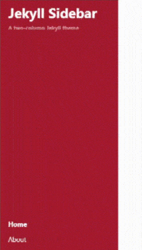
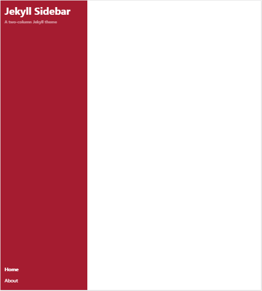

TL;DR
The Jekyll Sidebar is a mobile-first two-column Jekyll theme inspired by Hyde.


Constituents
Links
The Jekyll Sidebar Links facilitates external link placement on the navigation bar for external resources.
Sections
The Jekyll Sidebar Sections serve as the basic blocks for standalone content.
404
The Jekyll Sidebar includes a built-in 404 page to assist ease set-up with minimal exertion.